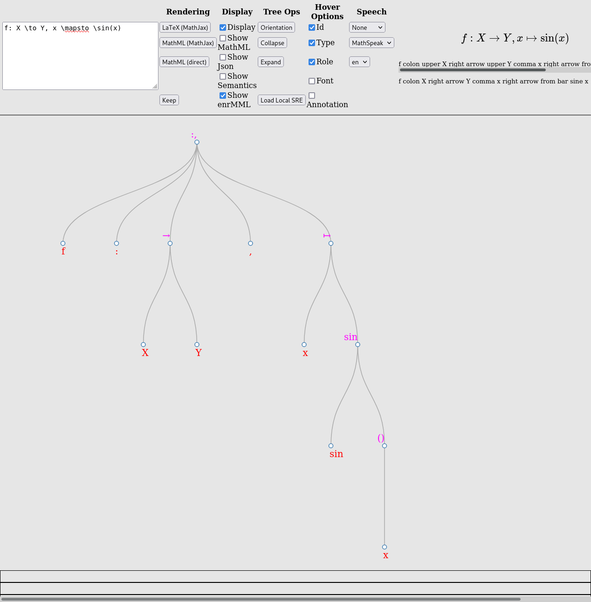

ATHEN STEM Accessibility Conference 2022
By Peter Krautzberger, krautzource
Scroll left/right to move through slides. Click headings to anchor the slide.
Demo time!
HTML production at the American Mathematical Society includes ebooks and journals.
The demos use a journal article, Disproof of a conjecture by Rademacher on partial fractions
NVDA using Chrome
(Firefox and Edge work, too.)
JAWS using Chrome
Firefox and Edge work, too.
VoiceOver using Safari
Chrome works, too (better even).
Orca using Firefox
Chrome works, too.
Touch AT is tricky. But we should at least get something:
Oops. It’s a regression.
Talkback is better:
(Firefox for Android works, too.)
NVDA using the epub reader Thorium
Disclosure: needs extra key during exploration (e.g., ctrl) to prevent Thorium pagination.
Thorium using its built-in read-aloud functionality.
The demos show print equation layout that
Equation layout is really a bit problematic.
Don’t forget heuristics and incongruencies (e.g., SRE’s cycle heuristics)
MathJax the leading visual rendering technology for print equation layout on the web
Speech Rule Engine the leading non-visual rendering technology for print equation layout
For web content, you can do no better than use these.
MathJax’s integration of Speech Rule Engine brings the highest quality of visual and non-visual rendering with a trove of features and affordances.
But JavaScript is not always an option - either due to availability or performance.
From The Mobile Performance Inequality Gap, 2021 (Alex Russel)
2020’s high-end Androids sport the single-core performance of an iPhone 8, a phone released in Q3’17
Mid-priced Androids were slightly faster than 2014’s iPhone 6
Low-end Androids have finally caught up to the iPhone 5 from 2012
An real life example of scale at the AMS:
Existence of minimal models for varieties of log general type, Birkar et al.
The AMS publishes roughly 45,000 pages across over 1,000 journal articles and nearly 100 books each year.
A solution must scale to process these not just once but on multiple iterations of web products per year.
The AMS publishes research-level mathematics.
Bleeding-edge research means bleeding-edge notation, i.e., equation layout.
Author responsibility through author ability (“users before authors before vendors”)
Remember VoiceOver (iOS)? Here it is again, with a quick workaround:
(A 1 line fix, targeting only iOS/iPadOS.)
Server Side Rendering allows for performant pages at this scale.
MathJax demos for NodeJS offers a range of example code snippets, even for speech output.
☑ performance at scale
☑ heuristics “move left”
But: how do we get MathJax+SRE client-side accessibility benefits?
The ARIA specification offers many patterns for complex interation beyond the scope of HTML.
Most interaction patterns are derived from OS-level widgets and application interface to follow Jakob’s Law.
Which one do we choose?
Speech Rule Engine offers a visualizer to inspect its heuristic analysis, creating its “semantic tree”.
Also, the DOM is a tree.
A widget that allows the user to select one or more items from a hierarchically organized collection.
ARIA Authoring Practices Tree Pattern
A tree view widget presents a hierarchical list. Any item in the hierarchy may have child items, and items that have children may be expanded or collapsed to show or hide the children.
Caveat Emptor Think of these more as educational resources. Don’t force your content to work with them – adjust them to work for your content.
Trees are fairly generic so aria-tree-walker’s documentation offers several other examples
Is it any good? Some quotes from testers at Portland Community College:
I think this is a much better solution to the extension for NVDA as you can get very very granular. I really really like this approach. I will be testing using other SVG vector images to see how flexible this can be.
I feel like this simple arrow-key-driven, branching and hierarchical approach can be useful in a lot of situations. I see it as particularly useful in mathematical, chemical, […], and similar fine-scale representations, as well as mapping.
I would have to use the product more extensively in a production environment. But it’s the best I’ve seen thus far for making STEM material comprehensible with screen reading technology.
Thanks to Alex Jordan from PCC (and PreTeXt) as well as the team at PCC’s Accessibility Office.
Is this perfect? Of course not.
The approach gives us